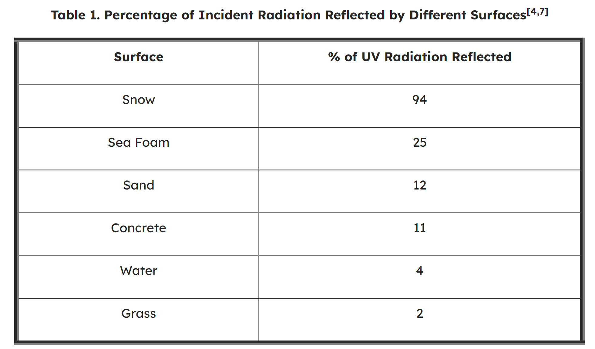

Why is UV Radiation(UVR) dangerous?
UVR can cause harmful effects to your skin, eyes, and immune system. Skin cancers around the eyes, especially on the eyelids, are common in Australia due to our high exposure to UV. If you notice any spots, moles, or other lesions around the eyes then you need to see the doctor or dermatologist as soon as possible.
In a short term, UVR can cause Photokeratitis
UVR can cause Photokeratitis (also known as Snow Blindness) as the eyes get sunburned. This is a painful condition when swelling and inflammation occur on the clear layer at the front of the eyes (the cornea) could cause temporary loss of vision.
- Red and Blurred eyes
- Tearing/Watery eyes
- Eyes being sensitive to light
- Pain around the eyes

In a long term, UVR can cause Pterygium or Macular Degeneration.
Pterygium (also known as Surfer’s Eye) is the condition when a membrane grows
on the clear layer at the front of the eyes (the cornea).
As this membrane grows, it could lead to permanent vision loss or distortion.
Common symptoms of Pterygium:
- Pink or flesh color on the eye corner near the nose.
- Usually painless
Macular Degeneration is when the area near the center of the eyes (the one that provides the clearest vision) gets damaged. This condition causes the loss of central vision, which results in blurred vision and could eventually cause blank spaces in vision. Macular Degeneration is common for people from 50 or above. There is currently no cure for this condition as treatment could only slow down its progression.
Common symptoms of Macular Degeneration:
- Straight-line seems bent
- Blurriness on print words
- Decrease intensity or brightness of colors
- Blurry spot(s) on vision
Beware of your surroundings
Even when we are in the shade and cannot sense UVR, it might still exist around us and hurt our eyes. Remember to bring sunglasses for yourself and also your children when you go skiing as the snow could reflect back 94% of the UVR to your eyes. You should also make sure that your children wear sunglasses when they go to the beach during the summer as the seafoam and sand can reflect up to 25% and 12% of the UVR respectively.
Retrieve from: Learnskin: DO SUN UMBRELLAS PROVIDE ENOUGH UV PROTECTION?